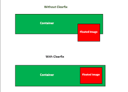

Answers to Questions
a. What is a box model in CSS. Give the box-sizing property definition
The CSS box model is a fundamental concept that describes how elements are displayed on a webpage. It consists of the content area, padding, border, and margin.
box-sizing: The box-sizing property in CSS determines how the total width and height of an element is calculated. The default value is content-box, where the width and height of the element only include the content but not the padding, border, or margin. By setting the value to border-box, the padding and border are included in the total width and height of the element.

b. What is a “clearfix hack” and when does it need to be applied
A "clearfix hack" is a technique used in CSS to clear the floated child elements within a container. It is necessary when a parent element containing floated child elements does not expand to the height of its children, causing layout issues such as elements overlapping or not displaying correctly.
c. What is a “margin collapse” and what are the use cases for margin: auto and negative margin values
Margin collapse in CSS occurs when the top and bottom margins of two adjacent elements overlap, collapsing into a single margin. This can affect the spacing between elements and needs to be considered in layout design.
Using margin: auto; on an element horizontally centers it within its parent container. Negative margin values can be used to create overlapping effects or adjust the positioning of elements in a layout.
d. What was the problem with achieving Holy Grail layout
The Holy Grail layout was a popular web design challenge involving creating a layout with a header, footer, and three columns, all of which are fluid and have equal height regardless of the content. The main issue was achieving equal height columns without using hacks or extra markup.
e. What are the modern ways to achieve Holy Grail layout
Modern methods to achieve the Holy Grail layout include using Flexbox or CSS Grid to create a responsive and flexible layout that adjusts to different screen sizes. These CSS features offer more efficient and cleaner solutions compared to older methods.